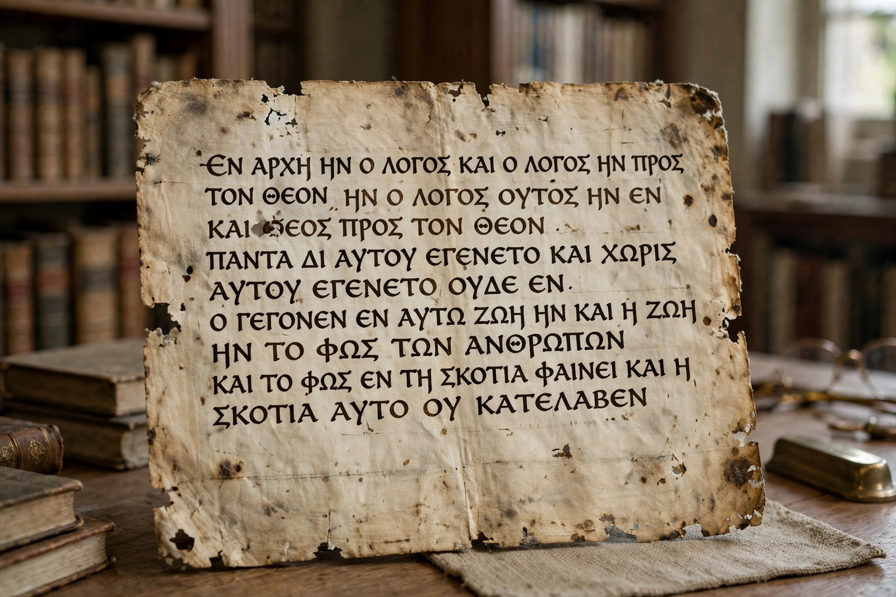

From Wikipedia, the free encyclopedia
| Didache | |
|---|---|
 | |
| Full title | The Teaching of the Lord to the Gentiles by the Twelve Apostles |
| Language | Koine Greek |
| Date | late 1st – early 2nd century AD (debated) |
| Manuscript | Codex Hierosolymitanus (1056), discovered 1873 |
| Genre | Church order / catechism |
The Didache (Greek: Διδαχή, "teaching"), also known as The Teaching of the Twelve Apostles, is a brief anonymous early Christian treatise written in Koine Greek. It is a composite work — part moral catechism, part church manual — and is considered by some scholars to date to the late first or early second century, making it possibly the earliest surviving Christian document outside the New Testament.
The text was lost for centuries, known only from references by early church writers such as Eusebius and Athanasius. In 1873 the Greek Orthodox metropolitan Philotheos Bryennios discovered a complete copy in the Codex Hierosolymitanus, an 11th-century manuscript in the library of the Monastery of the Holy Sepulchre in Constantinople; he published it in 1883. Fragments in Coptic, Ethiopic, and Georgian, and a 4th/5th-century papyrus fragment from Oxyrhynchus, preserve parts of the text.
The Didache has sixteen short chapters in three broad sections:
The Didache is a primary source for the worship and organization of very early Christian communities, showing a church still close to its Jewish roots, with charismatic prophets alongside emerging local offices. Its eucharistic prayers notably lack an institution narrative or atonement theology, which has made the text important — and contested — in debates about early liturgy.